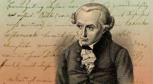

Immanuel Kant
07.10.2020 | Mikołaj Sypuła | 22:35:00
Życiorys
Immanuel Kant na znaczku Immanuel Kant przez całe życie związany był z Królewcem (obecnie: Kaliningrad). Jego ojciec był rzemieślnikiem, a matka córką pochodzącego ze Szkocji rymarza. W dzieciństwie Kant otrzymał surowe luterańskie wykształcenie. Dom rodzicielski i Collegium Fridericianum, do którego uczęszczał, znajdowały się pod wpływem pietyzmu (zwłaszcza kazań Franza Alberta Schultza[3]). W 1740 roku jako szesnastoletni chłopiec rozpoczął studia filozoficzne na Uniwersytecie Albrechta w Królewcu. Na uniwersytecie, gdzie głównie poświęcał się studiom przyrodniczym, zetknął się po raz pierwszy z filozofią oświecenia pod wpływem Knutzena, ucznia Wolffa. Studia uniwersyteckie zamknął pracą pt. Gedanken von der wahren Schützung der lebendigen Kräfte (1746). Zgłębiał między innymi koncepcję Leibniza. W 1746 roku był zmuszony przerwać naukę w związku ze śmiercią ojca. W latach 1746-1755 zarabiał na życie podejmując się prowadzenia prywatnych lekcji w okolicznych miejscowościach, co pozwoliło mu poznać elitę pruskiego społeczeństwa[4], a jednocześnie kontynuował własne badania filozoficzne i co kilka lat publikował nowe prace – pierwsza ukazała się w 1749 roku. W 1755 wydał anonimowo pracę Allgemeine Naturgeschichte und Theorie des Himmels. W tym samym roku wydał pracę magisterską: Meditationum quarundam de igne succincta delineatio i habilitował się na podstawie pracy Principiorum primorum cognitionis methaphysicae nova dilucidatio, w której starał się powiązać teorię Newtona z nauką Leibniza. Po śmierci Knutzena starał się bezskutecznie o katedrę po nim, pisząc w tym celu dysertację Monadologia physica (1756). Prócz tego w tym okresie, tzw. przedkrytycznym, Kant napisał kilka prac z dziedziny estetyki, etyki, teologii i metafizyki. W 1755 roku zdołał zyskać etat na uczelni, początkowo jako Privatdozent. Ponieważ pensja uczelniana przy tym stanowisku nie była wysoka, nadal prowadził prywatne lekcje. Podobno komentował to słowami, że lubi towarzystwo pięknych i wykształconych kobiet. Mimo tego do końca życia pozostał kawalerem. Przeszedł przez wszystkie szczeble kariery uniwersyteckiej nim w 1770 roku, będąc czterdziestopięcioletnim mężczyzną, objął katedrę logiki oraz metafizyki Uniwersytetu Królewieckiego, dzięki pracy De mundi sensibilis atque intelligibilis forma et principiis (1770). Był już wówczas uznanym wykładowcą i wpływowym filozofem. W tym czasie w jego myśleniu dokonał się zwrot ku filozofii krytycznej.Praca pedagogiczna na uczelni bardzo go absorbowała – zarzucił ją dopiero na trzy lata przed śmiercią. Pomimo tego znajdował czas na prowadzenie samodzielnych badań filozoficznych. Spędził na nich następną dekadę, czego efektem była publikacja napisanej w scholastycznym języku obszernej Krytyki czystego rozumu w 1781 roku – jednego spośród ważniejszych dzieł w historii filozofii. Ponieważ ta praca spotkała się z małym odzewem, w 1783 roku Kant wydał skromniejsze objętościowo i bardziej przystępne Prolegomena, zawierające wykład jego głównych idei. Pozostałe publikacje Kanta z okresu krytycznego to Uzasadnienie metafizyki moralności z 1785 roku, będące uproszczoną wersją Krytyki praktycznego rozumu z 1788 roku, oraz Krytyka władzy sądzenia z 1790 roku. W swych dziełach zajął się kolejno teorią poznania, etyką oraz estetyką. Pod koniec tego okresu pozostawał Kant pod wpływem empiryzmu Hume’a. Jego uczniowie – w tym Reinhold, Beck i Fichte – przeszli od kantyzmu do radykalnego w formie idealizmu. W 1799 roku Kant napisał list otwarty do Fichtego, w którym potępił takie praktyki. Uważa się, że było to jego ostatnie wystąpienie filozoficzne. Dzięki Kantowi prowincjonalny Uniwersytet w Królewcu stał się uznaną uczelnią. Niezachowany dom Kanta znajdował się przy Prinzessinenstr na Woli Zamkowej. W dawnej katedrze królewieckiej, w której został pochowany i gdzie zachowało się jego mauzoleum (proj. Friedrich Lahrs 1923), znajduje się Muzeum Kanta, pamiątki z nim związane gromadzi też Museum Stadt Königsberg w Duisburgu.
